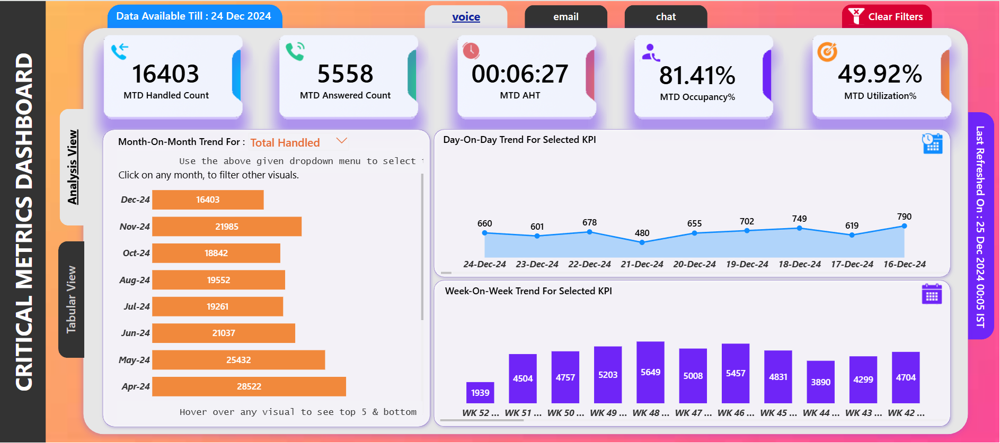
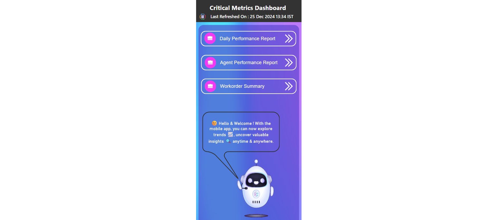
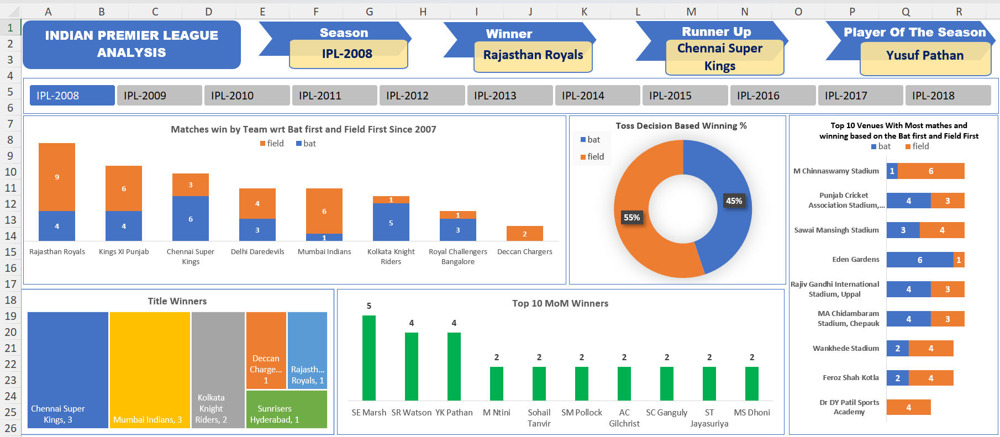

Unlock the Power of Data with me
At my core, I'm a business problem-solver using data & I am specialize in
building impactful solutions that empower leaders to make an data-driven decisions. My expertise
spans the Microsoft data stack, including Power BI, DAX, Power Query, Power BI Services,
Microsoft Fabric and Azure Cloud Services.
I further leverage SQL for robust data querying and Excel for comprehensive data
handling. For advanced capabilities, my proficiency extends to Python, encompassing Machine
Learning, AI, and Prompt Engineering, alongside Power Automate for process automation.
Take a look at my work and let's
connect!

Developed a Power BI dashboard
for an Australia-based retail
supply chain client to analyze
store complaints data. Imported the data into the
dashboard by connecting it to
the Azure SQL database.

Developed a Power BI dashboard
for an Australia-based retail
supply chain client to analyze
store complaints data. Imported the data into the
dashboard by connecting it to
the Azure SQL database.

Dashboard was built to show the season wise summary of the IPL tournament using Microsoft Excel.

The dataset used for this project have the COVID-19 cases recoreded from 24th Feb 2020 to 30th
Apr 2021.
I have build an Python Project to Scrape YouTube data using YouTube Data API.
This is an Capstone Project build using R programming For Google Data Analytics Certification.

Every dataset has a story and this set is pulled from IMDb.com of all the Indian movies on the
platform. I have build the predictive machine learning model using Stochastic Gradient Descent
(SGD) Regressor which is going to predicts the rating of a movie based on the given parameters.